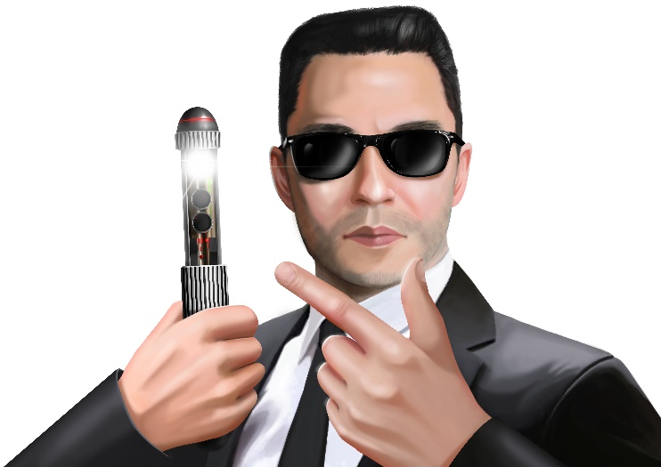

Have you ever wished that some of the incredible gadgets you have seen in movies were real? And what if they were real – would that necessarily be a good thing? Read about the neuralyser and form your own conclusion!
The memory eraser
A neuralyser is a fictional device seen in the Men in Black (MIB) movie series. It is a portable electronic gadget which can erase one’s memories in a flash.
Operating the neuralyser
A neuralyser can erase all memories formed during a particular period of time but not a specific memory such as that of a person or an event. The user determines the length of memory to be erased and sets the neuralyser accordingly before directing the unsuspecting target’s attention to the neuralyser. With the click of a button, a bright flash is produced. The target who is staring at the flash appears to be hypnotised as his memories are erased. The erased memories can either be replaced with new ones supplied by the user or simply deleted. To protect himself, the user deflects the rays of the neuralyser by donning a pair of sunglasses..

A character in the MIB movie using the neuralyser
Reversing the effects of the neuralyser
A deneuralyser is a room with a seat, a big computer and a metal head gear. It is used to recover memories erased by a neuralyser. The target sits in the room and puts on the head gear. Upon receiving instructions from the computer, the head gear transfers the erased memories into the target’s brain. While a person can be neuralysed within a few seconds, it takes a few minutes to be deneuralysed.
Uses of the neuralyser
In the MIB movies, a neuralyser is used to erase memories of agents before they leave their jobs. This is necessary since the MIB agents often have access to confidential information which should not be in their possession after they stop working as agents.
In real life, a neuralyser could come in handy at times when people want to “reset” their own or others’ memories. It would certainly be useful in undoing the effects of hurtful words uttered because of a slip of the tongue, or replacing one’s own unhappy memories with more joyful ones. Indeed, the neuralyser seems to be the perfect device to help people start afresh.
Real neuralysers – a boon or a bane?
Some scientists have started experimenting with mice to study the possibility of controlling memories in human beings. They found out that when light was beamed onto the parts of the mice’s brains which control memories, the memories could really be deleted. The challenge is finding a way to replicate that process in human beings. They have established that merely staring at a bright light does not affect the memory in any way.
As science narrows the gap between fiction and reality, we should start seriously considering the implications of having real neuralysers. While a neuralyser seems to be the perfect solution in some situations, it is can also bring about unthinkable consequences. A world in which one’s memories can be easily manipulated by anyone else could be an attractive idea for some but an awfully scary one for others.